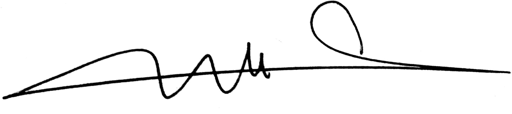

Social Cohesion and Resilience Between IDPs and Host Communities and Wellbeing in River Nile State 2024
![]()
A thesis submitted for the degree of Master of Public Health “MPH” at International University of Africa (IUA), Faculty of Medicine
Abstract
Abstract
Background: The ongoing conflict between the Sudanese Armed Forces (SAF) and the Rapid Support Forces (RSF) since April 15, 2023, has triggered a severe humanitarian crisis in Sudan, displacing over 3 million people. This crisis has intensified vulnerabilities such as food insecurity and social tensions within host communities, exacerbating competition for resources and threatening social cohesion. This study aims to explore the dynamics between internally displaced persons (IDPs) and host communities to enhance resilience and integration. The objectives are to assess social cohesion, measure resilience, identify influential factors, and evaluate the impact of social cohesion on well-being to guide effective intervention strategies. Methods: An analytical cross-sectional study was conducted in the River Nile state, focusing on adults aged 18 and above from both IDP and host communities impacted by the conflict. Data were collected via a self-structured questionnaire, administered face-to-face by trained research assistants using the Kobocollect mobile app. Statistical analyses, using R, included descriptive and inferential statistics to explore relationships between variables. Ethical approvals and gatekeepers’ permissions were obtained, and consent was secured from all participants, adhering to confidentiality and privacy standards. Results: The study comprised 410 participants—260 IDPs and 150 host community members. Significant socio-economic differences were noted: IDPs had a median age of 31 years, with higher rates of university (48% vs. 40%) and post-graduate education (25% vs. 11%) compared to host community members (p < 0.001). Post-conflict, IDPs saw a decrease in professional employment (44% to 19%) and an increase in unemployment (42% vs. 34%) (p < 0.001). Social cohesion was assessed through friendships and community engagement. Among IDPs, 47% had few friends within the host community and 59% felt welcomed, but 69% had average social integration scores. Perceived discrimination negatively impacted social cohesion, with those experiencing it reporting lower integration levels (p < 0.001). Resilience analysis showed that 26% of participants had low psychological well-being, with IDPs particularly affected (29% vs. 20% for host community members) (p < 0.001). Overall, while some integration was observed, IDPs faced significant challenges affecting their social cohesion and resilience. Discussion: The study highlights substantial socio-economic disparities and variations in social cohesion and resilience between IDPs and host community members in River Nile State. IDPs experienced greater challenges in housing, income, and employment. Despite these issues, high levels of social integration and shared values were evident. Resilience scores indicated lower psychological well-being and preparedness among IDPs compared to host community members. The findings underscore the need for targeted interventions to improve social cohesion and address the specific needs of IDPs for better integration and support. Conclusion: The study reveals that while there is some degree of social cohesion between IDPs and host communities, IDPs face significant challenges, including economic instability and lower psychological well-being. Discrimination negatively impacts social integration, emphasizing the need for targeted interventions to enhance resilience and strengthen social cohesion.
Declaration
This thesis is an original work of my research and contains no material which has been accepted for the award of any other degree or diploma at any university or equivalent institution and that, to the best of my knowledge and belief, this thesis contains no material previously published or written by another person, except where due reference is made in the text of the thesis.
Student name: Elhami A.A. Ahmed
Student signature: 
Date: August /2024
Reproducibility statement
This thesis is written using Quarto with renv to create a reproducible environment. All materials (including the data sets and source files) required to reproduce this document can be found at the Github repositorygithub.com/alturabi1990/mph-thesis.
Dedication
This thesis is dedicated to my parents whose endless love, support, and encouragement have been the foundation of all my achievements. Your unwavering belief in my potential has inspired me to pursue my dreams and strive for excellence.
To my partner, Fatim, for your constant love, understanding, and patience. Your support has been my anchor through the highs and lows of this journey.
To my mentors and teachers, who have guided me with wisdom and nurtured my passion for public health. Your dedication to education and research has profoundly influenced my academic and professional growth.
And finally, to all those who are committed to improving public health and making a difference in the lives of others. May this work contribute to the ongoing efforts to create healthier communities and a better world.
Acknowledgements
First and foremost, I would like to express my deepest gratitude to my thesis advisor,
Dr. Murwan Eissa, whose expertise, patience, and guidance were instrumental in the completion of this thesis. Your insightful feedback and unwavering support were invaluable throughout this journey. A special thank you to the faculty and staff of the Faculty of Medicine at International University of Africa (IUA) for providing a supportive academic environment and for all the assistance provided during my studies. I would like to acknowledge MOH- River Nile State & Locality offices for their support and resources that facilitated the research process. Your generosity made it possible for me to focus on my studies and research.To my colleagues, particularly,
Nusaiba.Z.Kambal, Safeeya Abolikelik, Tebyan A.A. Mohmmed, Arwa, emtenan, Omer D. H. Bayoume, Tagwa H. A Alamin, Rami Salah Omer, thank you for the camaraderie, stimulating discussions, and for the times we shared both the challenges and triumphs of our academic endeavors. Your critical insights and constructive suggestions have greatly enhanced the quality of my research.I am deeply indebted to the participants of my study, whose willingness to contribute their time and insights was essential to the completion of this research. Your contributions have been fundamental to this work.
On a personal note, I wish to extend my heartfelt thanks to
my wife, Daughter, family and friendsfor their unwavering support, patience, and understanding throughout this process. To my parents, your belief in me has been a constant source of motivation.Lastly, I would like to thank everyone who, in one way or another, has contributed to the completion of this thesis. Your support has been a cornerstone of my success.
Thank you all.